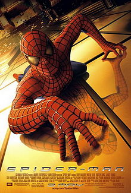
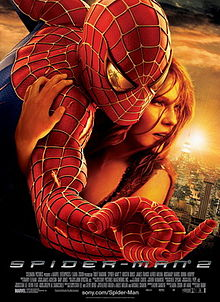
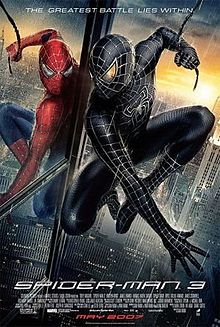

After being dismissed from NU I've had a gap year, after which I apllied to SDU
Contacts:
|  |
Spider-ManSpider-Man is a 2002 American superhero film directed by Sam Raimi. Based on the Marvel Comics character of the same name, the film stars Tobey Maguire as Peter Parker, a high school student living in New York, who turns to crimefighting after developing spider-like super powers. Spider-Man also stars Willem Dafoe as Norman Osborn (a.k.a. the Green Goblin), Kirsten Dunst as Peter's love interest Mary Jane Watson, and James Franco as his best friend Harry Osborn. |
|  | Spider-Man 2Set two years after the events of Spider-Man, the film focuses on Peter Parker struggling to manage both his personal life and his duties as Spider-Man, while Dr. Otto Octavius (Doctor Octopus) becomes diabolical following a failed experiment and his wife's death. He uses his mechanical tentacles to threaten and endanger the lives of New York City's residents. Spider-Man must stop him from annihilating the city. |
|  | Spider-Man 3Set two years after the events of Spider-Man, the film focuses on Peter Parker struggling to manage both his personal life and his duties as Spider-Man, while Dr. Otto Octavius (Doctor Octopus) becomes diabolical following a failed experiment and his wife's death. He uses his mechanical tentacles to threaten and endanger the lives of New York City's residents. Spider-Man must stop him from annihilating the city. |
This page has been coded as a labwork/hometask at WEB development classroom